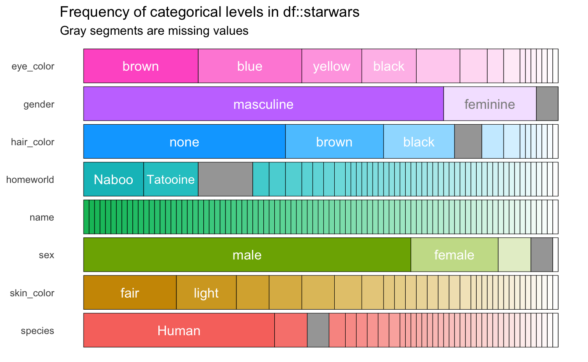
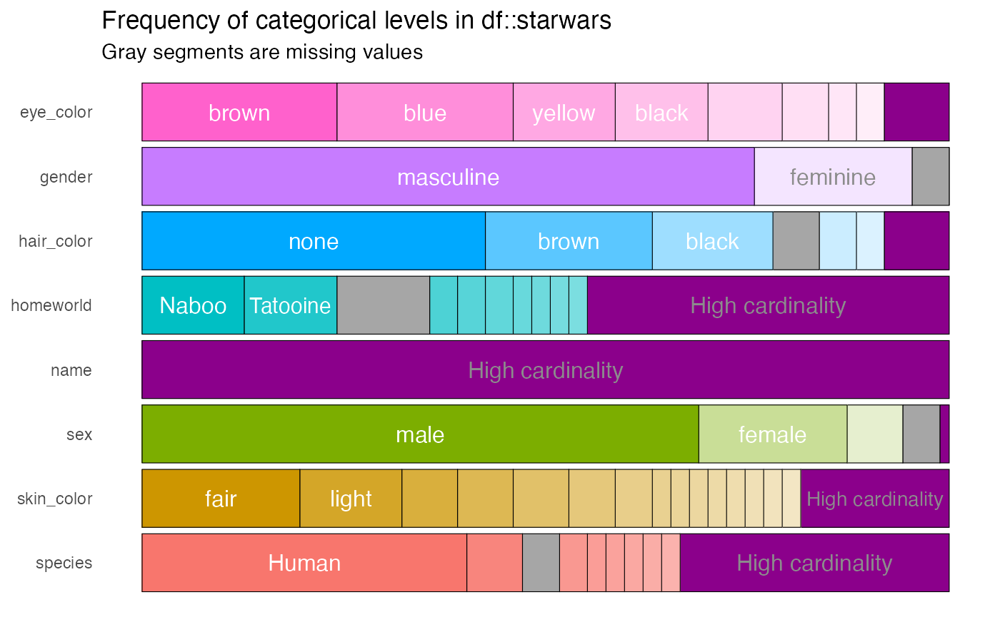

vignettes/pkgdown/inspect_cat_examples.Rmd
inspect_cat_examples.Rmdstarwars
The examples below make use of the starwars and storms data from the dplyr package
For illustrating comparisons of dataframes, use the starwars data and produce two new dataframes star_1 and star_2 that randomly sample the rows of the original and drop a couple of columns.
inspect_cat() for a single dataframeinspect_cat() returns a tibble summarising categorical features in a data frame, combining the functionality of the inspect_imb() and table() functions. The tibble generated contains the columns
col_name name of each categorical columncnt the number of unique levels in the featurecommon the most common level (see also inspect_imb())common_pcnt the percentage occurrence of the most dominant levellevels a list of tibbles each containing frequency tabulations of all levels
library(inspectdf)
inspect_cat(starwars)## # A tibble: 8 x 5
## col_name cnt common common_pcnt levels
## <chr> <int> <chr> <dbl> <named list>
## 1 eye_color 15 brown 24.1 <tibble [15 × 3]>
## 2 gender 3 masculine 75.9 <tibble [3 × 3]>
## 3 hair_color 13 none 42.5 <tibble [13 × 3]>
## 4 homeworld 49 Naboo 12.6 <tibble [49 × 3]>
## 5 name 87 Ackbar 1.15 <tibble [87 × 3]>
## 6 sex 5 male 69.0 <tibble [5 × 3]>
## 7 skin_color 31 fair 19.5 <tibble [31 × 3]>
## 8 species 38 Human 40.2 <tibble [38 × 3]>For example, the levels for the hair_color column are
inspect_cat(starwars)$levels$hair_color## # A tibble: 13 x 3
## value prop cnt
## <chr> <dbl> <int>
## 1 none 0.425 37
## 2 brown 0.207 18
## 3 black 0.149 13
## 4 <NA> 0.0575 5
## 5 white 0.0460 4
## 6 blond 0.0345 3
## 7 auburn 0.0115 1
## 8 auburn, grey 0.0115 1
## 9 auburn, white 0.0115 1
## 10 blonde 0.0115 1
## 11 brown, grey 0.0115 1
## 12 grey 0.0115 1
## 13 unknown 0.0115 1Note that by default, if NA values are present, they are counted as a distinct categorical level. A barplot is printed showing the relative split when passing the result to show_plot():
inspect_cat(starwars) %>% show_plot()
The argument high_cardinality in the show_plot() function can be used to bundle together categories that occur only a small number of times. For example, to combine categories only occurring once, use:
inspect_cat(starwars) %>%
show_plot(high_cardinality = 1)
The resulting bundles are shown in purple.
inspect_cat() for two dataframesWhen two dataframes are compared using inspect_cat(), list columns are returned for categorical columns common to both: lvls_1 and lvl2_2. In addition, the Jensen-Shannon divergence (jsd) and p values associated with Fisher’s exact test (fisher_p) are returned to enable comparison of the distribution of levels in each pair of columns.
inspect_cat(star_1, star_2)## # A tibble: 8 x 5
## col_name jsd pval lvls_1 lvls_2
## <chr> <dbl> <dbl> <named list> <named list>
## 1 eye_color 0.0410 0.712 <tibble [13 × 3]> <tibble [13 × 3]>
## 2 gender 0.00593 0.665 <tibble [3 × 3]> <tibble [3 × 3]>
## 3 hair_color 0.0523 0.390 <tibble [11 × 3]> <tibble [10 × 3]>
## 4 homeworld 0.238 0.906 <tibble [30 × 3]> <tibble [32 × 3]>
## 5 name NA NA <tibble [50 × 3]> <NULL>
## 6 sex 0.0156 0.379 <tibble [5 × 3]> <tibble [5 × 3]>
## 7 skin_color 0.176 1 <tibble [24 × 3]> <tibble [22 × 3]>
## 8 species 0.202 1 <tibble [23 × 3]> <tibble [27 × 3]>